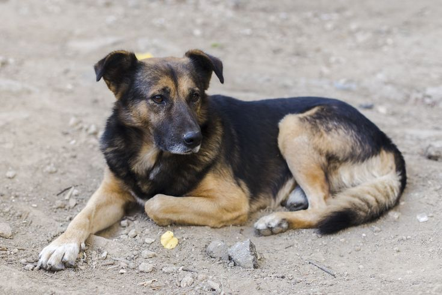
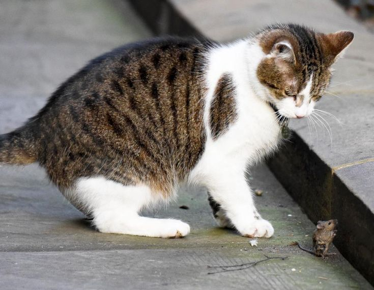

Dog's life, worth than a dog
Dog's life, worth than a dog
meat on the satay
Dinas Peternakan dan Kesehatan Hewan (PKH) Provinsi Bali membentuk tim investigasi perdagangan daging anjing untuk konsumsi manusia Baca Selengkapnya...

Cacing Parasit pada Hewan
Cacing Parasit pada Hewan
Peliharaan
Masih dalam tema “Cacingan”, kali ini kita akan bahas beberapa jenis cacing parasit yang biasa menginfeksi hewan peliharaan Baca Selengkapnya...

Poin Penting Merawat Bubub
si Anjing, Nomor 5 bikin kaget
Melalui artikel ini, kamu akan mempelajari mengenai bagaimana cara merawat anjing dengan baik dan benar agar mereka terhindar dari stres Baca Selengkapnya...